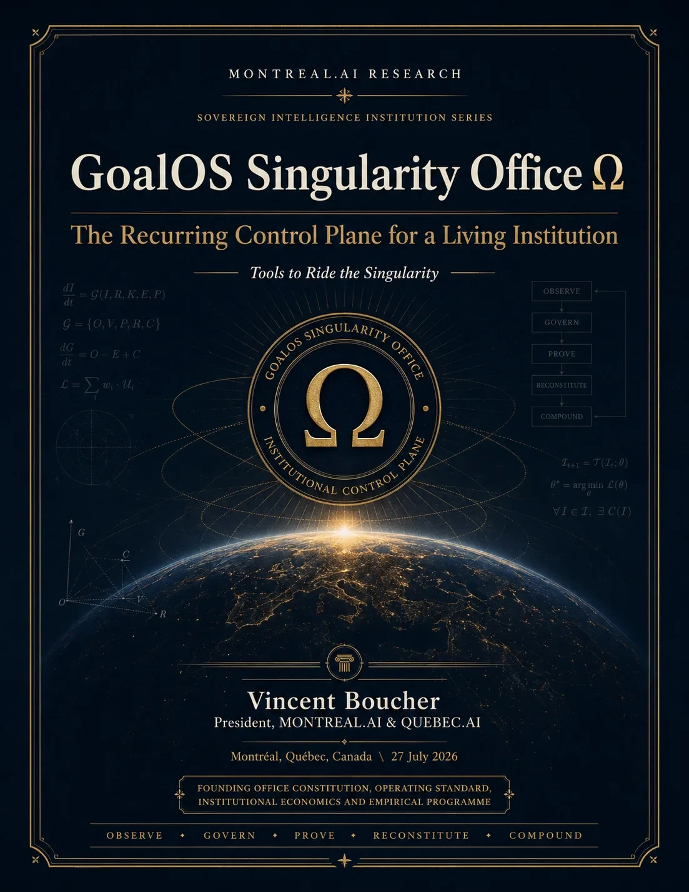

Direction Office
ObjectiveMaintains objectives, priorities, scenarios and stop conditions.
Principle
Founded in Montréal · 2003 · Founder-controlled
Observe. Govern. Prove. Reconstitute. Compound.
The Singularity Office connects direction, authority, missions, risk, evidence, memory and execution tempo. It maintains a continuous view of what is permitted, what must be proven and what must stop.
Acceleration requires a control institution, not merely more speed.
Office cycle
The Office is not a decorative dashboard. Every signal must be able to change an authority, mission, proof requirement, memory state or capital allocation.
Canonical offices
The Office can compose specialized functions without creating opaque bureaucracy. Every office has a mission, authority, record and dissolution condition.
Maintains objectives, priorities, scenarios and stop conditions.
PrincipleDesigns proof levels, validators, dockets and acceptance criteria.
PrincipleGoverns admission, rights, version, expiry, revocation and forgetting.
PrincipleAllocates verified contribution under reserve, risk and reinvestment laws.
PrincipleSource traceability
This page synthesizes the records below without converting publication into external validation or production outcome.
GoalOS Singularity Office Ω: https://montrealai.github.io/goalos-singularity-office-omega/ Paper: https://montrealai.github.io/goalos-singularity-office-omega/research/GoalOS_Singularity_Office_Omega_v3_0_0.pdf
Open record →03GoalOS Global Launch Ω Paper: https://montrealai.github.io/goalos-global-launch-omega-agi-club-owner-access-v1/research/GoalOS_Global_Launch_Omega_Paper_v4_0_0.pdf Paper : https://montrealai.github.io/goalos-global-launch-omega-ag
Open record →04GoalOS Global Jurisdiction, Funding & Fiscal Intelligence Ω (GoalOS GJFFI Ω) determines where to sell, hire, build, fund, own IP & deploy infrastructure—then composes a maximum-impact, evidence-gated global architecture. New paper
Open record →Start with one objective, authority map, risk register, proof gate and reconstitution cadence.